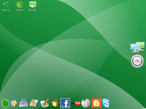

gOS
Archivierte Anleitung
Dieser Artikel wurde archiviert, da er - oder Teile daraus - nur noch unter einer älteren Ubuntu-Version nutzbar ist. Diese Anleitung wird vom Wiki-Team weder auf Richtigkeit überprüft noch anderweitig gepflegt. Zusätzlich wurde der Artikel für weitere Änderungen gesperrt.
Achtung!
Dieser Artikel bezieht sich auf eine ältere Version von gOS und ist veraltet. Zum aktuellen Stand siehe hier.
Zum Verständnis dieses Artikels sind folgende Seiten hilfreich:
gOS  ist ein inoffizielles, für günstige und leistungsschwache PCs angepasstes Ubuntu-Derivat der Firma "Good OS". Das System wurde nicht für (bzw. von) Google entwickelt, dennoch sind zahlreiche Online-Anwendungen dieser Firma
ist ein inoffizielles, für günstige und leistungsschwache PCs angepasstes Ubuntu-Derivat der Firma "Good OS". Das System wurde nicht für (bzw. von) Google entwickelt, dennoch sind zahlreiche Online-Anwendungen dieser Firma  direkt auf dem Desktop verlinkt. Kritiker haben wegen des Schreibens und Speicherns von Daten über Google große Sicherheitsbedenken. Der Vorteil der Online-Anwendungen ist, dass diese größtenteils serverseitig laufen und so die Ressourcen des eigenen Rechners schonen. Allerdings benötigt man dann natürlich eine entsprechend stabile (und schnelle) Internetanbindung, aufgrund des übertragenen Datenvolumens am besten eine Flatrate. Um weitere Ressourcen zu sparen wird der Fenstermanager Enlightenment verwendet, welcher weniger Arbeitsspeicher beansprucht als z.B. GNOME oder KDE.
direkt auf dem Desktop verlinkt. Kritiker haben wegen des Schreibens und Speicherns von Daten über Google große Sicherheitsbedenken. Der Vorteil der Online-Anwendungen ist, dass diese größtenteils serverseitig laufen und so die Ressourcen des eigenen Rechners schonen. Allerdings benötigt man dann natürlich eine entsprechend stabile (und schnelle) Internetanbindung, aufgrund des übertragenen Datenvolumens am besten eine Flatrate. Um weitere Ressourcen zu sparen wird der Fenstermanager Enlightenment verwendet, welcher weniger Arbeitsspeicher beansprucht als z.B. GNOME oder KDE.
Arbeitsumgebung¶
 gOS basiert auf Ubuntu 7.10, benutzt aber den ressourcensparenden Fenstermanager Enlightenment mit einem grünen Design. Des weiteren finden sich im Menü neben vielen Online-Applikationen (u.a. von Google) auch Desktop-Programme wie ein Bildbearbeitungsprogramm, Wiedergabeprogramme für Musik und Videos, Kommunikationsprogramme und Spiele. Die Icons der Programme können auch in einer Mac-OS-typischen Dock abgelegt werden. Weiterhin wird die Verwendung von Desklets unterstützt und es wurde eine Google-Desktop-Suche in die Oberfläche integriert.
Die folgenden Online-Applikationen sind in gOS eingebunden: Google Mail , Google News , Google Calendar , Google Maps , Google Docs , Google Products , Meebo , YouTube , Blogger , Facebook , Wikipedia , Faqly und Box.net .
Außerdem sind teilweise alternativ folgende Offline-Applikationen vorinstalliert: OpenOffice, Rhythmbox (Musik-Player), Xine (Video-Player), GnomeBaker (Brennprogramm), GIMP, Firefox, Thunderbird, Pidgin und Skype. Als Terminal ist UX Term (xterm mit UTF-8-Unterstützung) enthalten.
Installation¶
Installations-CD¶
Um gOS von CD aus zu Installieren, muss man zuerst das CD-Abbild als ISO-Datei von der Herstellerwebseite herunterladen. Anschließend muss man die Datei wie unter Ubuntu-CD beschrieben als CD brennen. Die einzelnen Installationsschritte gleichen denen von Ubuntu Installation.
Installation in VMware¶
Um gOS in der Virtualisierungssoftware VMware zu nutzen, kann man dazu von der Herstellerwebseite eine bereits erstellte virtuelle Maschine herunterladen. Die heruntergeladene ZIP-Datei muss anschließend entpackt [1] und in VMware importiert werden.
Bestehendes Ubuntu-System verwenden¶
Hinweis!
Zusätzliche Fremdquellen können das System gefährden.
Wer will, kann gOS auch mit Hilfe eines bereits vorhandenen Ubuntu-System (am besten Gutsy Gibbon) installieren.
Damit bei einem späteren Update der Paketquellen keine Fehlermeldungen auftauchen, kann vorher noch der Repositories-Schlüssel installiert werden. Dies geschieht mit [2]:
wget -q http://www.thinkgos.com/files/gos_repo_key.asc -O- | sudo apt-key add -
Anschließend fügt man den Software-Quellen folgende Quellen hinzu [3]:
deb http://packages.thinkgos.com/gos reloaded main deb-src http://packages.thinkgos.com/gos reloaded main
Jetzt müssen die Paketquellen aktualisiert werden:
sudo apt-get update
Zum Schluss muss folgendes Paket installiert [4] werden:
greenos-desktop
Nach der Installation¶
Ubuntu ist zwar direkt nach der Installation bereits vielseitig verwendbar, aber aus verschiedenen Gründen muss an vielen Stellen oft nachgeholfen werden. So kann z.B. das System auf Deutsch umgestellt werden, Treiber installiert und das System aktualisiert werden. Wie man am besten dabei vorgeht, wird in den ersten Schritten erklärt.
Deinstallation¶
System komplett entfernen¶
Zur kompletten Deinstallation (Entfernen) des gOS-Systems kann man wie in Ubuntu entfernen beschrieben vorgehen.
Zurückwechseln auf Ubuntu¶
Möchte man nun wieder auf die gewohnte Desktopumgebung von Ubuntu zurückwechseln, muss lediglich folgendes Paket deinstalliert [4] werden:
greenos-desktop
Auch sollte sicher gestellt werden, dass alle Abhängigkeiten von dem Metapaket ubuntu-desktop erfüllt sind. Außerdem kann man die nun nicht mehr benötigten Paketquellen [3] inklusive des Repositories-Schlüssels wieder entfernen.
Problembehebung¶
xorg.conf¶
Leider wird durch einen Bug in xdebconfigurator bei jedem Boot die xorg.conf automatisch neukonfiguriert. Dies sollte nur beim ersten Boot nach der Installation geschehen. So sind Änderungen an der Konfigurationsdatei für den XServer leider wirkungslos.
Lösung¶
Abhilft verschafft die Deinstallation [4] des Paketes xdebconfigurator über Synaptic. Allerdings kann man dann auch nicht mehr die xorg.conf im Falle einer fehlerhaften Konfiguration erneut manuell anlegen lassen, man sollte aber grundsätzlich vor dem Ändern der Datei ein Backup von ihr anlegen.
Kritik¶
Anfangs wurde über gOS positiv (linux.com oder auch Wired ) berichtet. Mittlerweile hat allerdings ein Blogger das System genauer unter die Lupe genommen und festgestellt , dass gOS mehr Hype ist als es wirklich kann: Im Vergleich zu anderen Distributionen nahm das System teilweise die doppelte Zeit beim Laden diverser Programme in Anspruch. Des weiteren ist man vom Internet sehr abhängig. Sollte man nicht ständig eine Verbindung zum Internet mit Flatrate (wegen der vermehrten Verbindungen und deren Kosten) haben oder das Internet manchmal ausfallen kann man viele Anwendungen nicht nutzen und auf viele Daten nicht zugreifen, da statt Desktop-Anwendungen oft webbasierende Alternativen integriert wurden. Auch sollte man das freiwillige Speichern von Daten, darunter auch private oder geschäftliche "Geheimnisse", bei externen Anbietern kritisch betrachten. Vor allem da dies nicht zwingen notwendig ist. So kann man auch, wenn man überall auf seine Daten zugreifen will, diese auf einem USB-Stick speichern und kann zusätzliche Sicherheitsmaßnahmen vornehmen. Leider fehlt es dem System dafür an grundlegenden Programmen wie z.B. einem guten Terminal und einem einfach gehaltenen Texteditor. Auch berichten diverse Nutzer im Forum, dass der Fenstermanager Enlightenment sehr zäh läuft und der Systemstart sehr langsam verläuft.
Alternativen¶
Möchte man auf die Integration von Online-Anwendungen verzichten, so kann man auch Ubuntu mit Enlightenment benutzen. Dabei müsste es auch möglich sein, das gOS-Design sowie die Widgets manuell zu installieren. Zusätzlich gibt es noch das Ubuntu-Derivat Elbuntu , welches diesen Fenstermanager standardmäßig integriert.
Wer primär auf die Integration von Online-Anwendungen auf dem Desktop wert legt, der hat mit Prism eine sehr gute Alternative.
- Erstellt mit Inyoka
-
 2004 – 2017 ubuntuusers.de • Einige Rechte vorbehalten
2004 – 2017 ubuntuusers.de • Einige Rechte vorbehalten
Lizenz • Kontakt • Datenschutz • Impressum • Serverstatus -
Serverhousing gespendet von